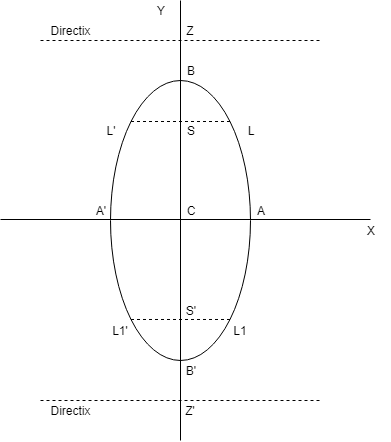

You must have heard of Ovals. Are ellipse and Oval same? Well, it's a bit tricky question. When you squash a circle, you can call it an oval. But Oval is not a mathematical term, it is derived from Latin word 'Ovus' for eggs. It doesn't have any precise mathematics definition.
So, it's better to say that ellipse and Oval are not same.
Let's now study ellipse through formula and definitions -
Standard equation of an ellipse referred to its pricipal axes along the coordinate axes is \(x^2\over a^2\) + \(y^2\over b^2\) = 1, where a > b & \(b^2\) = \(a^2(1 - e^2)\) \(\implies\) \(a^2\) - \(b^2\) = \(a^2e^2\)
where e = eccentricity (0 < e < 1)
Foci : S = (ae, 0) & S' = (-ae, 0)
(a) Equation of directrix :
x = \(a\over e\) & x = \(-a\over e\)
(b) Vertices :
A' = (-a, 0) & A' = (a, 0)
(c) Major axis :
The line segment A'A in which the foci S' & S lie is of length 2a & is called the major axis (a > b) of the ellipse. Point of intersection of major axis with directrix is called the
foot of the directrix(z) (\(\pm a\over e\), 0)
(d) Minor axis :
The y-axis intersects the ellipse in the points B' = (0,-b) & B = (0,b). The line segment B'B of length 2b (b < a) is called the minor axis of the ellipse.
(e) Principal Axes :
The major and minor axis is together are called Principal Axes of the ellipse.
(f) Center :
The point which bisects every chord of the conic drawn through it is called centre of the conic. C = (0,0) the origin is the centre of the ellipse \(x^2\over a^2\) + \(y^2\over b^2\) = 1
(g) Diameter :
A chord of the conic which passes through the centre is called a diameter of the conic.
(h) Focal chord :
A chord which passes through a focus is called a focal chord.
(i) Double ordinate:
A chord perpendicular to the major axis is called double ordinate.
(j) Latus Rectum:
The focal chord perpendicular to the major axis is called the latus rectum.
- (i) Length of latus rectum(LL') = \(2b^2\over a\) = \({(minor axis)}^2\over {major axis}\) = 2a(1 - \(e^2\))
- (ii) Equation of latus rectum : x = \(\pm\)ae
- (iii) Ends of latus rectum are L(ae, \(b^2\over a\)), L'(ae, -\(b^2\over a\)), L1(-ae, \(b^2\over a\)), L1'(-ae, -\(b^2\over a\))
(k) focal radii :
SP = a - ex & S'P = a + ex \(\implies\) SP + S'P = 2a = major axis
(l) Eccentricity :
e = \(\sqrt{1 - {b^2\over a^2}}\)
Example : If LR of an ellipse is half of its minor axis, then its eccentricity is -
Solution : As given \(2b^2\over a\) = b \(\implies\) 2b = a \(\implies\) \(4b^2\) = \(a^2\)
\(\implies\) \(4a^2(1-e^2)\) = \(a^2\) \(\implies\) \(1 - e^2\) = \(1\over 4\)
\(\therefore\) e = \(\sqrt{3/2}\)
Another form of ellipse : \(x^2\over a^2\) + \(y^2\over b^2\) = 1 (a < b)

(a) AA' = Minor axis = 2a
(b) BB' = Major axis = 2b
(c) \(a^2\) = \(b^2(1-e^2)\)
(d) Latus rectum LL' = L1L1' = \(2a^2\over b\), equation y = \(\pm\)be
(e) Ends of latus rectum are : L(\(a^2\over b\), be), L'(-\(a^2\over b\), be ), L1(\(a^2\over b\), -be), L1'(-\(a^2\over b\), -be)
(f) Equation of directrix y = \(\pm\)be
(g) Eccentricity : e = \(\sqrt{1 - {a^2\over b^2}}\)
Position of a point w.r.t an ellipse :
The point P(\(x_1\), \(y_1\)) lies outside, inside or on the ellipse according as :
\({x_1}^2\over a^2\) + \({y_1}^2\over b^2\) - 1 > < or = 0
Auxilliary circle
A circle described on major axis as diameter is called auxilliary circle.
Parametric representation
The equation x = acos\(\theta\) & y = bsin\(\theta\) together represent the ellipse \({x_1}^2\over a^2\) + \({y_1}^2\over b^2\) = 1, where \(\theta\) is a parameter.
Note that if P(\(\theta\)) = (acos\(\theta\), bsin\(\theta\)) is on the ellipse then ; Q(\(\theta\)) = (acos\(\theta\), bsin\(\theta\)) is on auxilliary circle.
Line and an ellipse
The line y = mx + c meets the ellipse \({x_1}^2\over a^2\) + \({y_1}^2\over b^2\) = 1 in two real, coincident, or imaginary according as \(c^2\) is < = or > \(a^2m^2 + b^2\).
Hence y = mx + c is tangent to the ellipse \({x_1}^2\over a^2\) + \({y_1}^2\over b^2\) = 1 if \(c^2\) = \(a^2m^2 + b^2\)
The equation to the chord of the ellipse joining two points with eccentric angles \(\alpha\) & \(\beta\) is given by \(x\over a\) cos\(\alpha + \beta\over 2\) + \(y\over b\)sin\(\alpha + \beta\over 2\) = cos\(\alpha - \beta\over 2\)